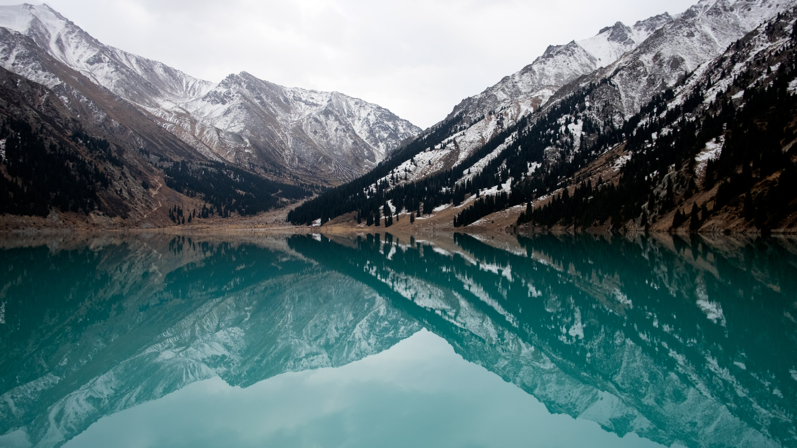

Большое Алматинское озеро относится к Бостандыкскому району Алма-Аты и находится в 20 км к югу-востоку от центра бывшей столицы Казахстана. В непосредственной близости от водоема проходит государственная граница с Киргизией, но наличие специального пропуска для посещения БАО не требуется. Согласно правительственному постановлению 2015 г., пограничный режим на участке 7–12 км вглубь территории Казахстана отменен по отношению к туристам — резидентам и нерезидентам страны, а также к лицам без гражданства.
Вопреки своему названию, высокогорное озеро имеет небольшую площадь водной глади. Оно расположено на высоте более 2500 м над уровнем моря, в окружении заснеженных горных вершин Заилийского Алатау. Горная расщелина появилась в результате активных тектонических процессов, произошедших в далеком прошлом. Более двух тысяч лет назад мощное землетрясение спровоцировало масштабный обвал, перегородивший ущелье. В результате образовалась природная плотина и поражающий своей неземной красотой глубокий водоем, ставший настоящей бирюзовой жемчужиной Северного Тянь-Шаня.

